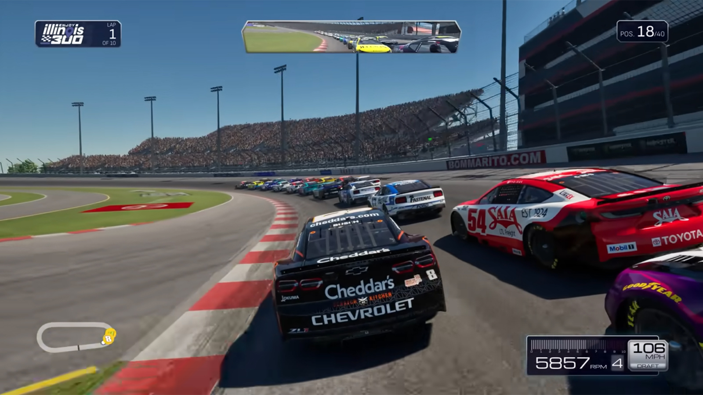

NASCAR 25 focuses on authenticity, delivering tightly modeled cars and track behaviors. It's a strong racing sim for fans who enjoy tuning and realistic handling.
Driving and Experience
Vehicle feel is realistic and deeply tunable. Races can be punishing, but that's part of the attraction for simulation fans.
The Good
- Accurate handling model
- Robust tuning options
The Bad
- Steep learning curve for newcomers
Conclusion
For players who love deep simulation and the nuances of NASCAR racing, NASCAR 25 delivers a compelling package.